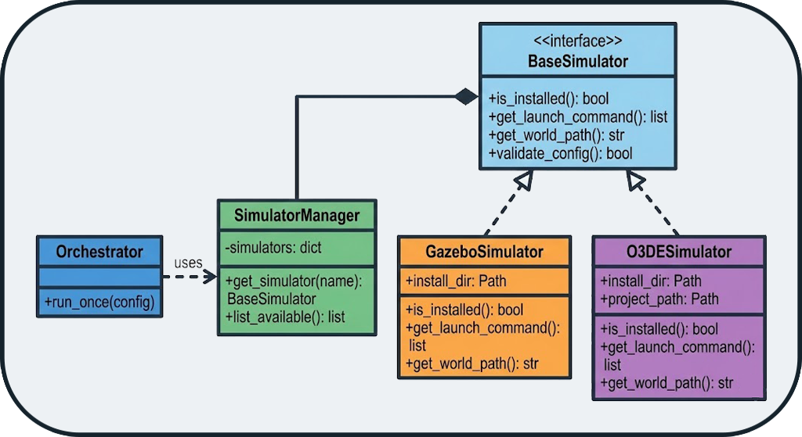
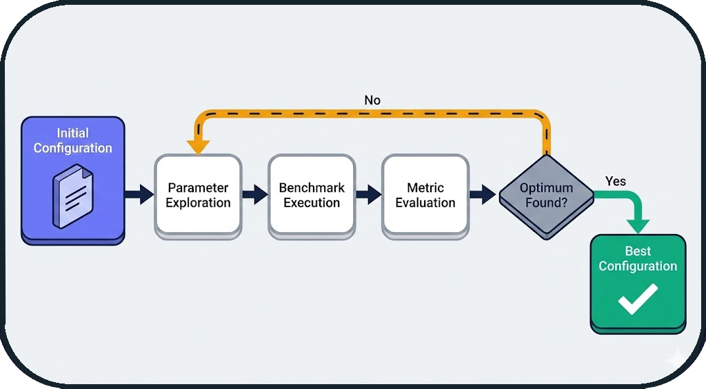

Tools & Infrastructure
This document describes the tools and infrastructure components that support the BenchBot system.
1. Simulator Manager (Adapter Pattern)
Concept: Unified Interface
The system supports Gazebo and O3DE via the Adapter pattern. Each simulator implements the BaseSimulator interface, ensuring that the orchestrator does not need to know implementation details.

Extensibility
Adding a new simulator (e.g., Isaac Sim, Webots) only requires implementing a new Adapter, without modifying the orchestrator.
Supported Simulators
| Simulator | Status | Description |
|---|---|---|
| Gazebo Classic | ✅ Supported | Historic ROS simulator, stable and proven |
| O3DE | ✅ Supported | Modern 3D engine with realistic physics |
2. Ground Truth Map Generation
Concept: Virtual Laser Slicing
The system generates the Ground Truth (GT) map without using SLAM, ensuring no bias. The gt_map.generator module performs a virtual laser slice of the SDF (Simulation Description Format) file.
Generation Pipeline
- XML Parsing: Extraction of 3D geometries (boxes, cylinders) from the SDF
- 2D Projection: Horizontal slice at laser height (e.g., 0.17m)
- Rasterization: Conversion to occupancy grid (configurable resolution)
- ROS 2 Export: Generation of PGM + YAML files compatible with
map_server

Zero-Bias Guarantee
The GT map is purely analytical, derived from the geometry of the simulated world, without any influence from a SLAM algorithm.
Automatic Generation
For SLAM benchmarks, the GT map is automatically generated at the start of each run if it does not already exist in the dataset directory. This ensures that each environment has its reference map without manual intervention.
Usage Example
# Generate a GT map from an SDF file
python -m gt_map.generator \
--sdf worlds/warehouse.sdf \
--resolution 0.05 \
--laser-z 0.17 \
--output maps/warehouse_gt
Result:
- maps/warehouse_gt.pgm: Map image (black = occupied, white = free)
- maps/warehouse_gt.yaml: ROS 2 metadata (resolution, origin, etc.)
3. PDF Report Generator
Features
The PDF report generator (tools/report_generator.py) creates professional reports with:
- Aggregated Metrics: Comparative multi-run tables
- Visualizations: Trajectory plots, maps, time-series metrics
- Statistics: Means, standard deviations, min/max
- Metadata: Configuration, duration, system resources
Report Structure
📄 benchmark_report.pdf
├── 📊 Executive Summary
│ ├── Runs Overview Table
│ └── Key Metrics Comparison
├── 📈 Detailed Results
│ ├── Run 1: cartographer_warehouse
│ │ ├── Trajectory Overlay
│ │ ├── Map Comparison (GT vs SLAM)
│ │ └── Metrics Breakdown
│ ├── Run 2: slam_toolbox_warehouse
│ └── ...
└── 📋 Appendix
├── Configuration Files
└── System Information
Usage Example
from tools.report_generator import SLAMReportGenerator
# Load results from multiple runs
runs_data = [
load_run_results("results/runs/RUN_001"),
load_run_results("results/runs/RUN_002"),
]
# Generate the report
generator = SLAMReportGenerator(runs_data, "reports/comparison.pdf")
generator.generate()
4. Centralized Logger
Architecture
The centralized logging system (utils/logger.py) provides:
- Automatic Context: Module name, timestamp, level
- File Rotation: Logs automatically archived
- Crash Reports: Stacktraces saved in case of error
- Filtering: Configurable levels (DEBUG, INFO, WARNING, ERROR)
Usage Example
from utils.logger import get_logger
logger = get_logger("my_module")
logger.info("Benchmark started")
logger.warning("High CPU usage detected: 95%")
logger.error("SLAM node crashed", exc_info=True)
Output:
[2026-01-08 15:30:45] [INFO] [my_module] Benchmark started
[2026-01-08 15:31:12] [WARNING] [my_module] High CPU usage detected: 95%
[2026-01-08 15:31:45] [ERROR] [my_module] SLAM node crashed
Traceback (most recent call last):
...
Crash Reports
In the event of an unhandled exception, the system automatically generates a crash report in logs/crashes/ with:
- Full stacktrace
- Local variables
- System state (CPU, RAM, active processes)
- Run configuration
5. Dependency Manager
Concept
The dependency manager (runner/dependency_manager.py) automates the management of ROS 2 packages required by SLAM algorithms.
Features
- Verification: Detects if a package is installed
- Automatic Download: Clones Git repositories if the package is not available
- Automatic Installation: Compiles and installs packages from source
- Automatic Sourcing: Generates necessary
sourcecommands - Wrapping: Injects dependencies into launch commands
Automatic Installation from Git
The system can automatically download and install ROS 2 packages from Git repositories if specified in the configuration. This ensures that all dependencies are available without manual intervention.
Example
Result: The orchestrator automatically wraps the launch command:
# Before
ros2 launch cartographer_ros cartographer.launch.py
# After (automatic)
bash -c "source /opt/ros/humble/setup.bash && \
source ~/cartographer_ws/install/setup.bash && \
exec ros2 launch cartographer_ros cartographer.launch.py"
6. Advanced Features
Autotuner: Automatic Parameter Optimization
The Autotuner is an automatic optimization module that explores the parameter space of a SLAM algorithm to find the optimal configuration for a given environment.
Concept
Instead of manually testing different parameter values, the autotuner uses optimization algorithms (Grid Search, Random Search, Bayesian Optimization) to automatically identify the best settings.
Workflow

Integration into Workflow Loop
The autotuner is an integral part of the BenchBot workflow loop. At the end of each run, the system can automatically:
- Analyze the obtained metrics (IoU, SSIM, ATE, etc.)
- Use these results to guide parameter exploration
- Propose a new optimized configuration
- Automatically launch the next run
This iterative and automatic approach allows for parameter optimization without manual intervention between runs.
Configuration Example
autotuner:
enabled: true
algorithm: bayesian_optimization # grid_search, random_search, bayesian_optimization
target_metric: iou # Metric to maximize
max_iterations: 20
parameters:
# Map resolution
- name: slam.resolution
type: float
range: [0.025, 0.1]
# Update rate
- name: slam.update_rate
type: int
range: [5, 20]
# Occupancy threshold
- name: slam.occupancy_threshold
type: float
range: [0.5, 0.8]
Result
After 20 iterations, the autotuner generates:
- Best Configuration: config_optimized.yaml
- Optimization History: Convergence plot
- Comparative Report: Before/after optimization
Typical Gain: +15% to +30% on key metrics (IoU, SSIM)
Hardware Degradations: Real-World Simulation
The system allows simulating hardware degradations to test the robustness of SLAM algorithms in non-ideal conditions.
Degradation Types
1. Sensor Noise
Simulates the inaccuracy of real sensors (LiDAR, cameras).
degradation:
enabled: true
range_sensor:
noise_std: 0.02 # Standard deviation of Gaussian noise (meters)
noise_type: gaussian # gaussian, uniform, salt_pepper
Impact: Noisy measurement points → less accurate map
2. Range Limitation
Simulates a sensor with reduced maximum range.
degradation:
enabled: true
range_sensor:
max_range: 8.0 # Max range (meters, vs 30m nominal)
min_range: 0.5 # Min range
Impact: Unobserved areas → reduced coverage
3. Frequency Scaling
Simulates a sensor with reduced acquisition frequency.
degradation:
enabled: true
range_sensor:
frequency_scale: 0.5 # 50% of nominal frequency (e.g., 5Hz instead of 10Hz)
Impact: Fewer data → less accurate localization
4. Speed Scaling
Simulates a slower robot (useful for testing convergence).
Impact: Longer exploration time → different convergence
5. Dynamic Occlusions
Simulates moving obstacles that temporarily block the sensor.
degradation:
enabled: true
occlusions:
enabled: true
frequency: 0.1 # Probability of occlusion per second
duration: 2.0 # Average duration of an occlusion (seconds)
Impact: Temporary data loss → robustness tested
Complete Example: Realistic Scenario
# Simulating a low-cost robot in a dusty warehouse
degradation:
enabled: true
range_sensor:
noise_std: 0.05 # Low-end sensor
max_range: 10.0 # Limited range
frequency_scale: 0.6 # Reduced frequency (energy saving)
robot:
speed_scale: 0.8 # Slower robot (safety)
occlusions:
enabled: true
frequency: 0.05 # Moving obstacles (forklifts, people)
duration: 1.5
Utility: Validate that a SLAM algorithm works in real-world conditions, not just in perfect simulation.
Use Cases
Robustness Comparison
matrix:
include:
- slam: [cartographer, slam_toolbox, rtabmap]
degradation:
enabled: [false, true] # With and without degradations
Result: Identify which SLAM is most robust to degraded conditions.
Threshold Calibration
# Find the maximum acceptable noise level
matrix:
include:
- slam: cartographer
degradation:
range_sensor:
noise_std: [0.01, 0.02, 0.05, 0.1]
Result: Determine at which noise level performance drops.
Next Steps
- System Overview: Architecture overview
- Orchestrator Architecture: State machine and probes
- Evaluation Logic: Metrics and calculations
- API Reference: Code documentation